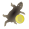
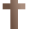
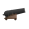
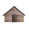

<!doctype html>
<html lang="en">
    <head>
        <meta charset="utf-8">
        <meta http-equiv="X-UA-Compatible" content="IE=edge">
        <meta name="viewport" content="initial-scale=1,user-scalable=no,maximum-scale=1,width=device-width">
        <meta name="mobile-web-app-capable" content="yes">
        <meta name="apple-mobile-web-app-capable" content="yes">
        <link rel="stylesheet" href="css/leaflet.css">
        <link rel="stylesheet" href="css/qgis2web.css"><link rel="stylesheet" href="css/fontawesome-all.min.css">
        <link rel="stylesheet" href="css/leaflet-measure.css">
        <style>
        html, body, #map {
            width: 100%;
            height: 100%;
            padding: 0;
            margin: 0;
        }
        </style>
        <title></title>
    </head>
    <body>
        <div id="map">
        </div>
        <script src="js/qgis2web_expressions.js"></script>
        <script src="js/leaflet.js"></script>
        <script src="js/leaflet.rotatedMarker.js"></script>
        <script src="js/leaflet.pattern.js"></script>
        <script src="js/leaflet-hash.js"></script>
        <script src="js/Autolinker.min.js"></script>
        <script src="js/rbush.min.js"></script>
        <script src="js/labelgun.min.js"></script>
        <script src="js/labels.js"></script>
        <script src="js/leaflet-measure.js"></script>
        <script src="data/tenduemaximaledelaFranceenAmriqueduNord_1.js"></script>
        <script src="data/Fortsetforteresses_2.js"></script>
        <script>
        var map = L.map('map', {
            zoomControl:true, maxZoom:14, minZoom:2
        })
        var hash = new L.Hash(map);
        map.attributionControl.setPrefix('<a href="https://github.com/tomchadwin/qgis2web" target="_blank">qgis2web</a> &middot; <a href="http://leafletjs.com" title="A JS library for interactive maps">Leaflet</a>');
        var measureControl = new L.Control.Measure({
            position: 'topleft',
            primaryLengthUnit: 'meters',
            secondaryLengthUnit: 'kilometers',
            primaryAreaUnit: 'sqmeters',
            secondaryAreaUnit: 'hectares'
        });
        measureControl.addTo(map);
        document.getElementsByClassName('leaflet-control-measure-toggle')[0]
        .innerHTML = '';
        document.getElementsByClassName('leaflet-control-measure-toggle')[0]
        .className += ' fas fa-ruler';
        var bounds_group = new L.featureGroup([]);
        function setBounds() {
            if (bounds_group.getLayers().length) {
                map.fitBounds(bounds_group.getBounds());
            }
        }
        var layer_Fonddecarte_0 = L.tileLayer('https://maps.wikimedia.org/osm-intl/{z}/{x}/{y}.png', {
            opacity: 1.0,
            attribution: '',
        });
        layer_Fonddecarte_0;
        map.addLayer(layer_Fonddecarte_0);
        function pop_tenduemaximaledelaFranceenAmriqueduNord_1(feature, layer) {
            var popupContent = '<table>\
                    <tr>\
                        <td colspan="2"><strong>Explication</strong><br />' + (feature.properties['explicatio'] !== null ? Autolinker.link(String(feature.properties['explicatio'])) : '') + '</td>\
                    </tr>\
                </table>';
            layer.bindPopup(popupContent, {maxHeight: 400});
        }

        function style_tenduemaximaledelaFranceenAmriqueduNord_1_0() {
            return {
                pane: 'pane_tenduemaximaledelaFranceenAmriqueduNord_1',
                opacity: 1,
                color: 'rgba(67,95,103,1.0)',
                dashArray: '',
                lineCap: 'butt',
                lineJoin: 'miter',
                weight: 2.0, 
                fill: true,
                fillOpacity: 1,
                fillColor: 'rgba(20,75,77,0.5098039215686274)',
            }
        }
        map.createPane('pane_tenduemaximaledelaFranceenAmriqueduNord_1');
        map.getPane('pane_tenduemaximaledelaFranceenAmriqueduNord_1').style.zIndex = 401;
        map.getPane('pane_tenduemaximaledelaFranceenAmriqueduNord_1').style['mix-blend-mode'] = 'normal';
        var layer_tenduemaximaledelaFranceenAmriqueduNord_1 = new L.geoJson(json_tenduemaximaledelaFranceenAmriqueduNord_1, {
            attribution: '',
            pane: 'pane_tenduemaximaledelaFranceenAmriqueduNord_1',
            onEachFeature: pop_tenduemaximaledelaFranceenAmriqueduNord_1,
            style: style_tenduemaximaledelaFranceenAmriqueduNord_1_0,
        });
        bounds_group.addLayer(layer_tenduemaximaledelaFranceenAmriqueduNord_1);
        //map.addLayer(layer_tenduemaximaledelaFranceenAmriqueduNord_1);
        function pop_Fortsetforteresses_2(feature, layer) {
            var popupContent = '<table>\
                    <tr>\
                        <td colspan="2"><strong>Nom</strong><br />' + (feature.properties['nom'] !== null ? Autolinker.link(String(feature.properties['nom'])) : '') + '</td>\
                    </tr>\
                    <tr>\
                        <td colspan="2"><strong>Début</strong><br />' + (feature.properties['annee_d'] !== null ? Autolinker.link(String(feature.properties['annee_d'])) : '') + '</td>\
                    </tr>\
                    <tr>\
                        <td colspan="2"><strong>Type</strong><br />' + (feature.properties['type'] !== null ? Autolinker.link(String(feature.properties['type'])) : '') + '</td>\
                    </tr>\
                    <tr>\
                        <td colspan="2"><strong>Fin</strong><br />' + (feature.properties['annee_f'] !== null ? Autolinker.link(String(feature.properties['annee_f'])) : '') + '</td>\
                    </tr>\
                </table>';
            layer.bindPopup(popupContent, {maxHeight: 400});
        }

        function style_Fortsetforteresses_2_0(feature) {
            switch(String(feature.properties['type'])) {
                case 'Commerce':
                    return {
                pane: 'pane_Fortsetforteresses_2',
        rotationAngle: 0.0,
        rotationOrigin: 'center center',
        icon: L.icon({
            iconUrl: 'markers/commerce.svg',
            iconSize: [22.799999999999997, 22.799999999999997]
        }),
            }
                    break;
                case 'Évangélisation':
                    return {
                pane: 'pane_Fortsetforteresses_2',
        rotationAngle: 0.0,
        rotationOrigin: 'center center',
        icon: L.icon({
            iconUrl: 'markers/croix.svg',
            iconSize: [22.799999999999997, 22.799999999999997]
        }),
            }
                    break;
                case 'Militaire':
                    return {
                pane: 'pane_Fortsetforteresses_2',
        rotationAngle: 0.0,
        rotationOrigin: 'center center',
        icon: L.icon({
            iconUrl: 'markers/canon.svg',
            iconSize: [22.799999999999997, 22.799999999999997]
        }),
            }
                    break;
                case 'Peuplement':
                    return {
                pane: 'pane_Fortsetforteresses_2',
        rotationAngle: 0.0,
        rotationOrigin: 'center center',
        icon: L.icon({
            iconUrl: 'markers/habitation.svg',
            iconSize: [22.799999999999997, 22.799999999999997]
        }),
            }
                    break;
            }
        }
        map.createPane('pane_Fortsetforteresses_2');
        map.getPane('pane_Fortsetforteresses_2').style.zIndex = 402;
        map.getPane('pane_Fortsetforteresses_2').style['mix-blend-mode'] = 'normal';
        var layer_Fortsetforteresses_2 = new L.geoJson(json_Fortsetforteresses_2, {
            attribution: '',
            pane: 'pane_Fortsetforteresses_2',
            onEachFeature: pop_Fortsetforteresses_2,
            pointToLayer: function (feature, latlng) {
                var context = {
                    feature: feature,
                    variables: {}
                };
                return L.marker(latlng, style_Fortsetforteresses_2_0(feature));
            },
        });
        bounds_group.addLayer(layer_Fortsetforteresses_2);
        map.addLayer(layer_Fortsetforteresses_2);
        var baseMaps = {};
        L.control.layers(baseMaps,{'Forts et forteresses<br /><table><tr><td style="text-align: center;"></td><td>Commerce (43)</td></tr><tr><td style="text-align: center;"></td><td>Évangélisation (4)</td></tr><tr><td style="text-align: center;"></td><td>Militaire (58)</td></tr><tr><td style="text-align: center;"></td><td>Peuplement (22)</td></tr></table>': layer_Fortsetforteresses_2,' Étendue maximale de la France en Amérique du Nord': layer_tenduemaximaledelaFranceenAmriqueduNord_1,"Fond de carte": layer_Fonddecarte_0,},{collapsed:false}).addTo(map);
        setBounds();
        </script>
    </body>
</html>
